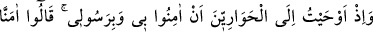
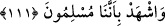

Kalplere şifa sunmak, olmuş onlara nasip!”
Her mürşid-i kamil zamanının Îsâsıdır! Eğer dersen ki: Allah’ın veli kulları gerçek
tabiplerdir. Tabiplerin görevi tedavi etmek, hastaları iyileştirmektir, helak edip hasta
hale getirmek değildir. Peki madem ki durum böyledir öyleyse İbrâhim el-Havvâs’ın
hâli nedir? Zîrâ o, ıssız bir yerde elbisesini soymak isteyen kişinin iki gözüne doğru iki
parmağını uzatmış, hırsızın iki gözü yerinden çıkıp yere akmıştı.
Buna cevap olarak ben de derim ki: “İbrâhim bu hırsızın kör olması için dua etmiştir.
İbrâhim b. Edhem ise kendisine vuran kişinin cennete gitmesi için dua etmiştir. Çünkü
el-Havvâs, hırsızın cezâsını çekmeden tevbe etmeyeceğini anlamış, bu cezâyı onun için
en uygun yol olarak görmüştür. İbrahim b. Edhem ise o zalim kişinin tevbesinin,
cezâlandırılma ile olmadığını anladığı için ona fazilet ve cömertliğinin bir nişanesi
olarak dua etme yolunu tercih etmiştir. Onun duasının hayır ve bereketi hasıl olmuş ve o
zalim adam gelip kendisinden bağışlanmasını talep edip özür dilemiştir. İbrâhim b.
Edhem de ona “Kendisine özür dilenmesine ihtiyaç duyulan adamı Belh’te (padişahlık
yaptığı şehirde) bıraktım.” diye cevap vermiştir.
Peygamberler, hal ve maslahata göre mutlak olarak dua ederlerdi. Onlar yaptıkları
bütün duaları Allah Teâlâ’nın izniyle, enaniyyet ve benliklerinden sıyrılmış olarak
yapmışlardır. Ağızlarından, ancak vakıaya ve hikmete uygun hak sözler sadır olur.
Allah’ın veli kulları da bu konuda peygamberlerin takipçileridir. Fakat insanlar
bilmezler.
Mesnevî’de şöyle geçmektedir:
Fakat hakîkatte dâvâ nerede
O padişahın önünde dâvâ da fânidir aşk da
Zeyd öldü desek, bu cümlede zeyd fâildir;
Ama hakîkatta fâil değildir. Elinden bir şey gelmez ki
O nahiv bakımından fâildir.
Yoksa hakîkatte mef ’ûldür, ölüm onu öldürüverir.
Gönülde yurt tutan her hayal,
Mahşer gününde bir sûrete bürünecektir.
111. Hani havârîlere, “Bana ve peygamberime îman edin” diye ilham etmiştim,
bildirmiştim. Onlar (da) “Îman ettik, bizim Allah’a teslim olmuş kimseler
(müslümanlar) olduğumuza sen de şâhit ol” demişlerdi.